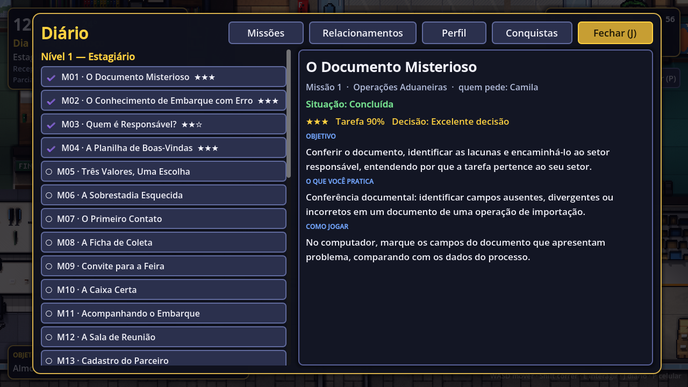
De estagiário a diretor
Seis cargos, de Estagiário a Diretor, com responsabilidade e liderança crescendo a cada promoção.
Versão 1.6 · grátis para Windows e Android
Um RPG de escritório sobre Comércio Exterior. Comece como estagiário numa despachante aduaneira, escolha o seu setor e chegue a Diretor.
Teclado e mouse, controle (no PC e no celular) e toque.
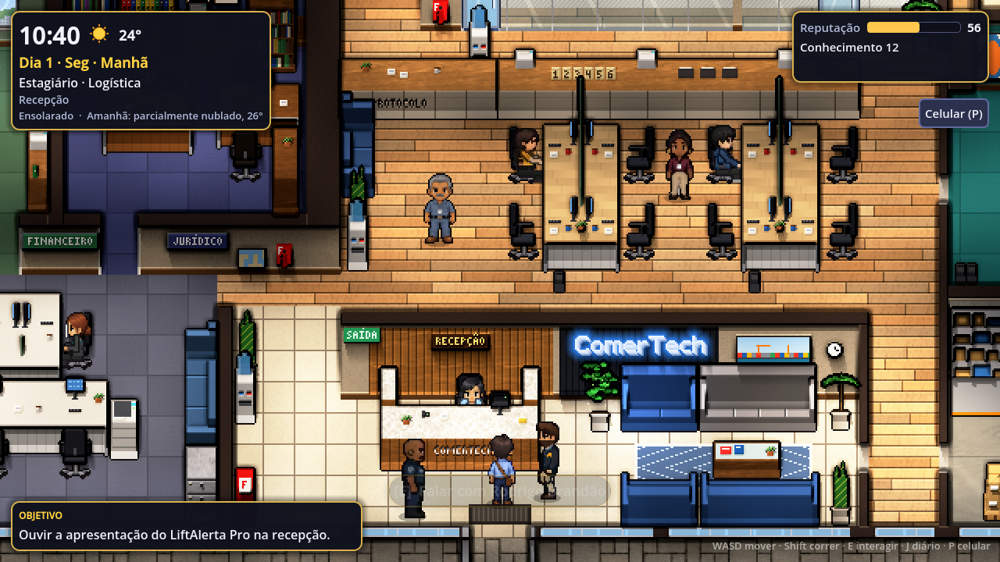
Você entra na ComerTech, uma despachante aduaneira, e aprende Comércio Exterior fazendo: conferindo documentos, calculando custos, negociando com clientes e decidindo o que fazer quando algo dá errado.

Seis cargos, de Estagiário a Diretor, com responsabilidade e liderança crescendo a cada promoção.
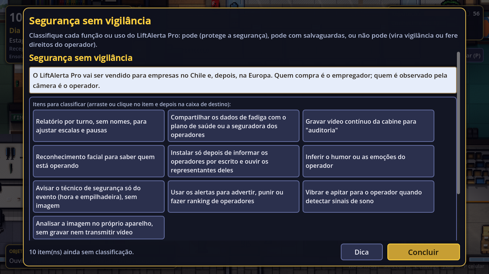
Jurídico, Financeiro, Marketing, Logística ou Processos. Cada setor tem missões próprias em todos os níveis.
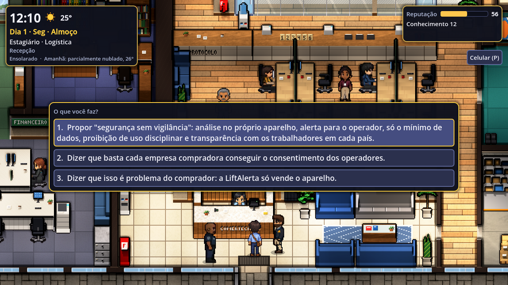
Reputação, conhecimento, salário e a relação com os colegas mudam com o que você decide.
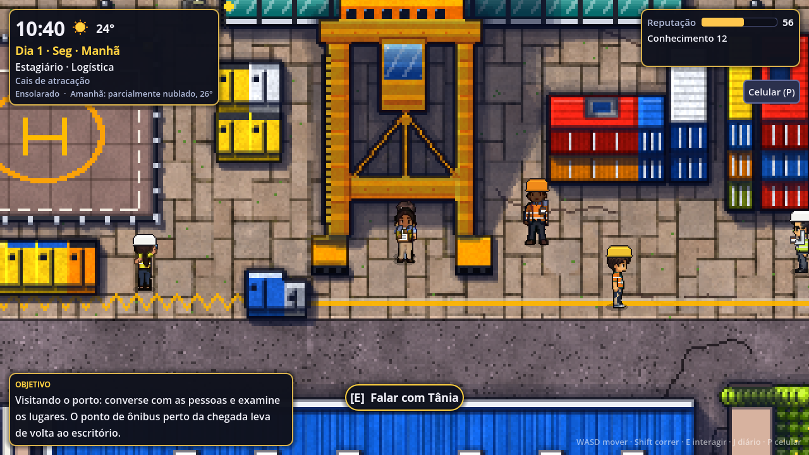
Porto, Receita Federal, centros logísticos, terminal de cargas aéreas, bar e uma casa para decorar.
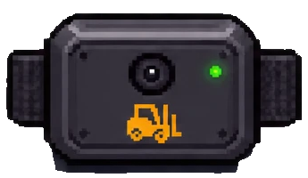
LiftAlerta Pro, sensor de fadiga para empilhadeiras
Rodrigo Brandão, da LiftAlerta Sensores, quer exportar o sensor de fadiga que fabrica. Em 16 missões, todos os setores da ComerTech ajudam: mercado, preço, documentos, transporte da bateria de lítio, contrato e campanha.
Rodrigo BrandãoSe o operador achar que está sendo vigiado, ele cobre a câmera com fita no primeiro dia, e o sensor não salva ninguém.
Capturas da versão 1.6.
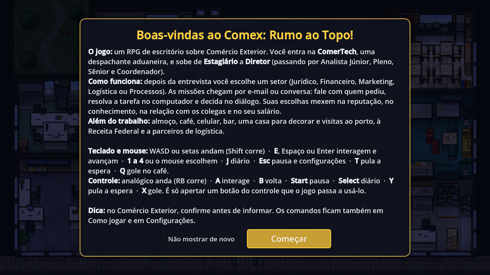
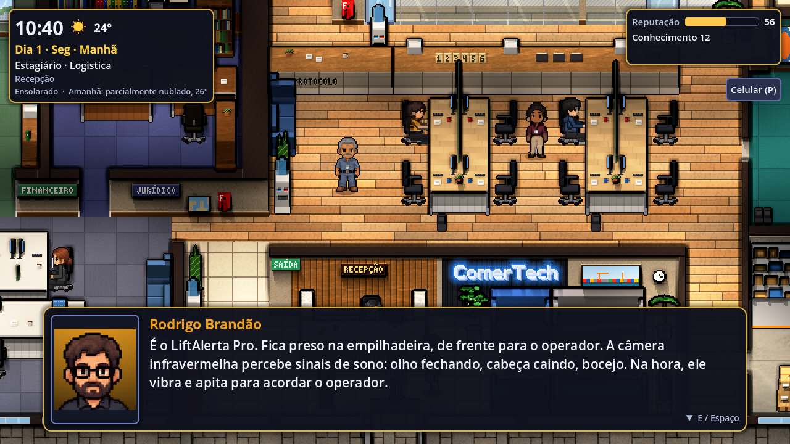
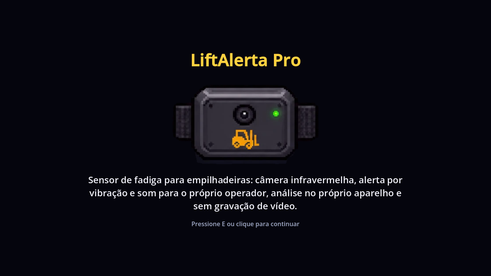
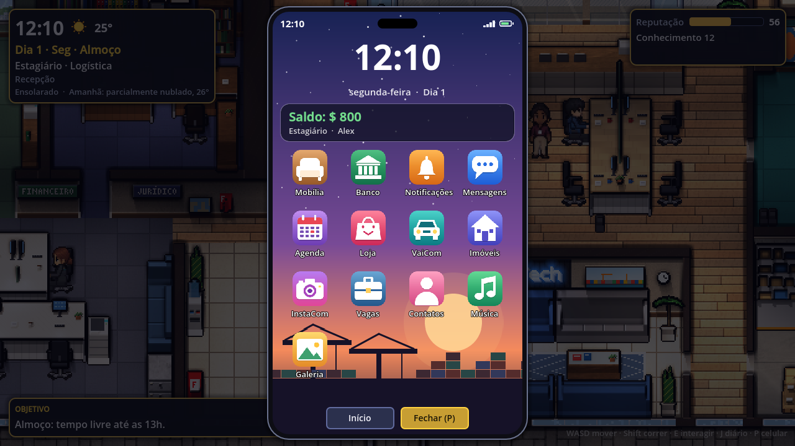
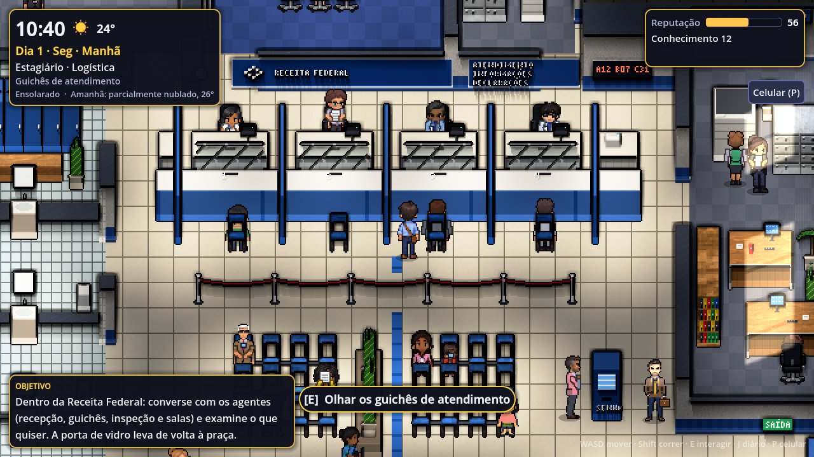
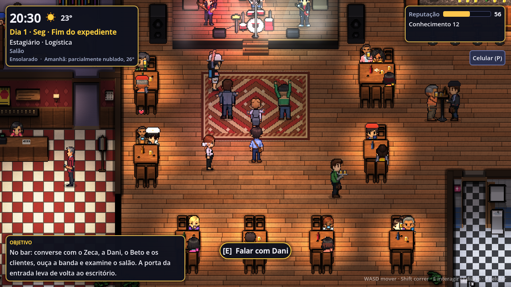
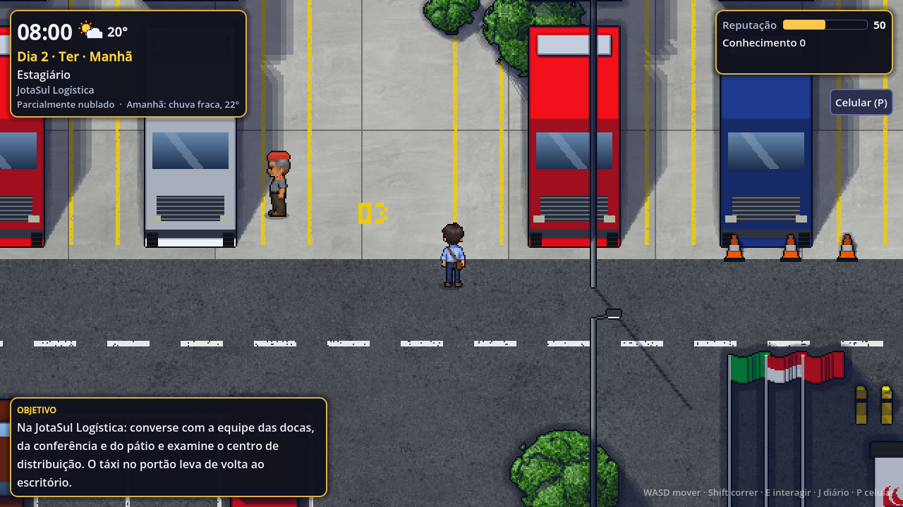
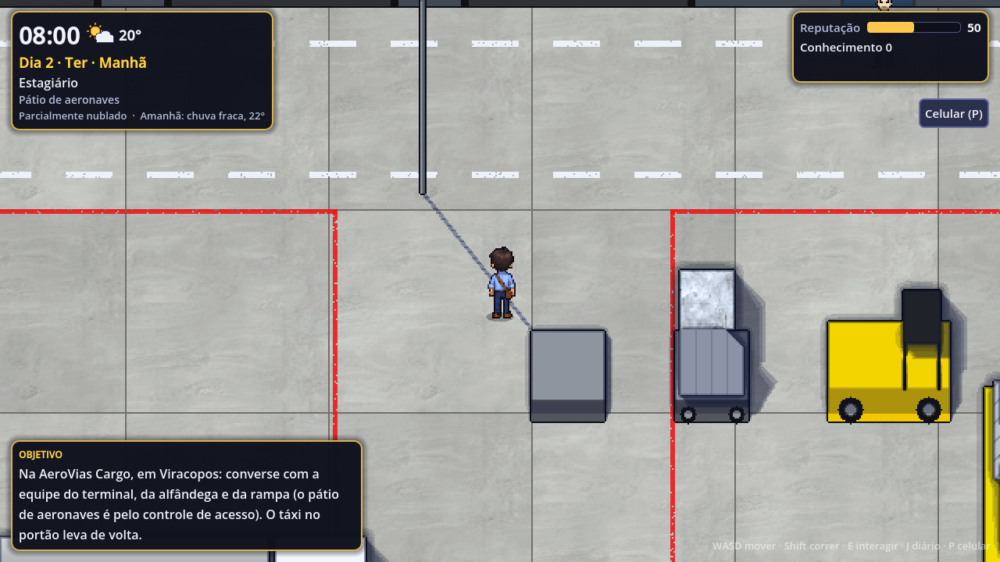
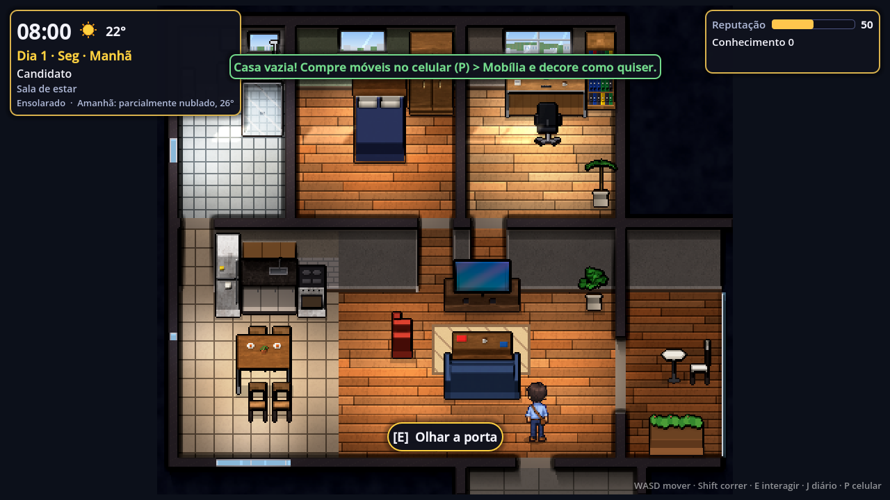
Grátis. Versão 1.6.
Windows 10 ou 11 de 64 bits. Não precisa instalar.
Android 7 ou mais novo, de 64 bits. O jogo abre deitado.
A versão para iPhone ainda está em preparação.
Os comandos também aparecem na tela de boas-vindas e nas configurações do jogo.
| Ação | Teclado e mouse | Controle | Toque (celular) |
|---|---|---|---|
| Andar | W A S D ou setas, Shift corre | Analógico ou direcional, RB corre | Arraste no lado esquerdo da tela |
| Interagir e avançar | E, Espaço ou Enter | A | Botão amarelo “Usar” |
| Escolher | 1 a 4 ou mouse | Direcional e A | Toque na opção |
| Diário | J | Select | Botão “Diário” |
| Pausa e configurações | Esc | Start | Botão “Pausa” ou voltar do Android |
| Pular a espera | T | Y | Botão “Pular” |
No PC o jogo passa para o controle quando você aperta um botão dele. No celular, conecte o controle por Bluetooth ou USB e escolha Configurações › Jogar com › Controle.